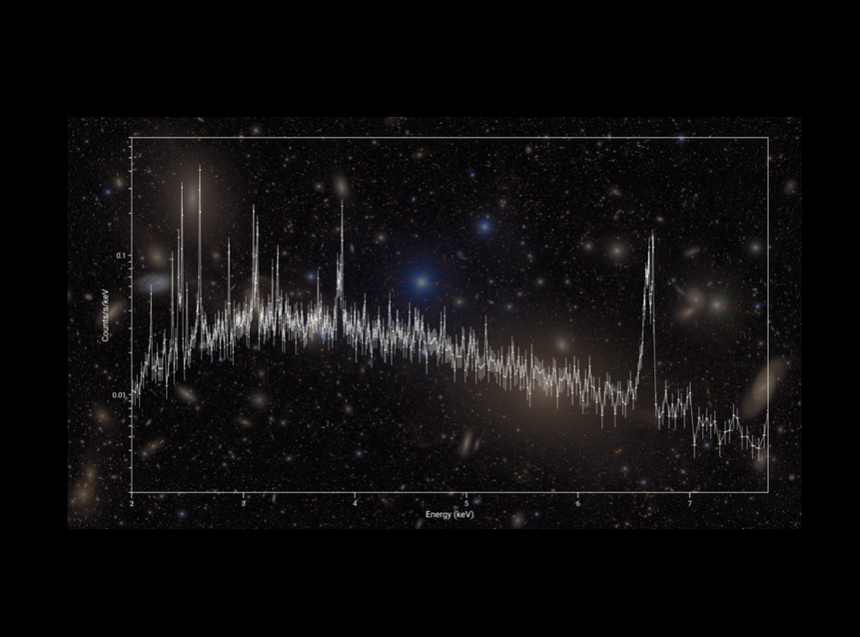

High-resolution X-ray spectroscopy provides a uniquely powerful view of the physical conditions and dynamics of cosmic matter. By separating X-ray light into individual spectral lines produced by different atoms and ions, we can robustly measure the temperature, chemical composition, density, ionization state, and velocity of astrophysical plasmas. These measurements allow us to investigate how matter behaves and moves in some of the most extreme environments in the Universe.
Our work uses high-resolution X-ray spectra obtained with several generations of space observatories. We analyze grating spectra from XMM-Newton and Chandra, which have provided some of the sharpest X-ray spectra of astronomical sources over the past two decades. We are also taking advantage of the new generation of X-ray microcalorimeters, in particular the Resolve instrument aboard XRISM, which combines high spectral resolution with access to a broad range of X-ray energies and to extended sources.
We use these tools primarily to study the hot and energetic Universe across a remarkable range of scales. In galaxy clusters, the largest gravitationally bound systems in the Universe, we measure the temperature, chemical composition, and motions of the hot intracluster medium. Around accreting supermassive black holes and stellar-mass compact objects, we study powerful winds and outflows and investigate how matter is accreted and expelled. High-resolution X-ray spectroscopy also gives us a window onto the cold and neutral Universe: we use absorption by interstellar gas and dust to study their chemistry and elemental abundances, probing the material that ultimately becomes part of new stars and planetary systems.
The XRISM (X-ray Imaging and Spectroscopy Mission) telescope, a JAXA/NASA mission with ESA partnership, launched in 2023 to study the Universe via high-resolution X-ray spectroscopy. Our group took on leading roles in the XRISM collaboration, analyzing some of the mission’s first observations. Since the end of the collaboration, our group has successfully obtained many new XRISM observations, which we use to deepen our understanding of the most extreme environments in the Universe. With XRISM, we are able to directly measure gas motions, multi-temperature structure, and non-equilibrium effects in the intracluster medium. Additionally, XRISM allows us to resolve the many phases of outflowing winds around supermassive black holes.
Selected relevant publications:
Rogantini D., Canizares C. R., Costantini E., et al. Silicon, Sulfur, and Iron in the Interstellar Medium: A High-resolution X-Ray Spectral Study of GX 340+0. ApJ, 1002, 86 (2026).
XRISM collaboration, corr. authors: McCall H., Simionescu A., Kilbourne C. A XRISM/Resolve View of the Dynamics in the Hot Gaseous Atmosphere of M87. ApJ, 998, 210 (2026).
Zhang C., Zhuravleva I., Heinrich A., et al. Mapping the Perseus galaxy cluster with XRISM: Gas kinematic features and their implications for turbulence. A&A, 707, A109 (2026).
Heinrich A., Zhang C., Zhuravleva I., et al. A Yin-yang Galaxy Cluster Merger in A1914 Revealed by XRISM. ApJL, 995, L50 (2025).
Image credit: XRISM/H. McCall/SDSS; ApJ, 998, 210 (2026)
